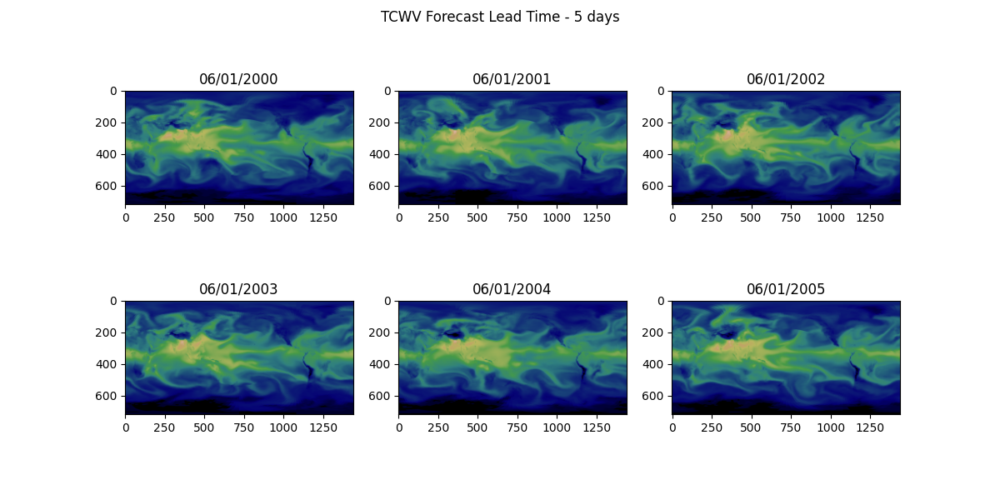

Note
Go to the end to download the full example code.
Distributed Manager Inference#
Setting up distributed manager for parallel inference.
Many inference workflows are embarrassingly parallel and can be easily sharded across multiple devices. This example demonstrates how one can use the PhysicsNeMo distributed manager to distribute inference across mutliple GPUs. The distributed manager is a utility that provides a useful set of properties that pertain to a parallel environment.
In this example you will learn:
How to use the distributed manager to access parallel environment properties
Parallelize deterministic inference across multiple initial date-times
Limitations of parallel inference in Earth2Studio
Post-processing strategies of parallel job outputs
# /// script
# dependencies = [
# "earth2studio[dlwp] @ git+https://github.com/NVIDIA/earth2studio.git",
# "matplotlib",
# ]
# ///
Set Up#
Set up the distributed manager by initializing it. Out of the box, the distributed manager supports MPI, SLURM and PyTorch parallel environments which provide information regarding the parallel enviroment but environment variables.
For example, this script could be ran using:
# OpenMPI
mpirun -np 2 python 08_distributed_manager.py
# Torch run
torchrun --standalone --nnodes=1 --nproc-per-node=2 08_distributed_manager.py
Warning
When running in parallel, make sure the .env file in the repository examples folder is not present. The .env file is intended for the documentation build only.
import os
os.makedirs("outputs", exist_ok=True)
from dotenv import load_dotenv
load_dotenv() # TODO: make common example prep function
import numpy as np
import torch
from loguru import logger
from physicsnemo.distributed import DistributedManager
DistributedManager.initialize() # Only call this once in the entire script!
dist = DistributedManager()
assert ( # noqa: S101
dist._distributed
), "Looks like torch distributed isn't set up. Check your env variables!"
logger.info(
f"Inference runner {dist.rank} of {dist.world_size} with device {dist.device}"
)
2026-03-23 20:31:52.070 | INFO | __main__:<module>:86 - Inference runner 0 of 1 with device cuda:0
Next the needed components get initialized. Rigorous parallel support is not part of Earth2Studio’s design goals, there are some spots where potential race conditions can occur. Thus some additional care should be taken to ensure safe parallel inference.
from earth2studio.data import WB2ERA5
from earth2studio.io import ZarrBackend
from earth2studio.models.px import DLWP
# Load model
package = DLWP.load_default_package()
if dist.rank == 0:
model = DLWP.load_model(package)
torch.distributed.barrier()
if dist.rank != 0:
model = DLWP.load_model(package)
When loading models that are built into Earth2Studio, the model’s checkpoint files
will be downloaded into the machines cache. If each inference process has access to
the same cache location, then only one should download the checkpoint triggered by
load_model().
Here earth2studio.models.px.DLWP checkpoint files are first downloaded by
process 0 and then loaded by other processes.
# Create the data source
data = WB2ERA5()
The remote date store will place cached data into separate caches for each process. This makes the download of initial state data safe during parallel inference but also means that multiple jobs will download the same date-time if needed.
chunks = {"time": 1, "lead_time": 1}
io = ZarrBackend(
file_name=f"outputs/08_output_{dist.rank}.zarr",
chunks=chunks,
backend_kwargs={"overwrite": True},
)
Earth2Studio does not provide distributed IO support. The recommendation is to always output data for each process to a separate file, then aggregate the data during post processing.
Execute the Workflow#
Next we can run the workflow. This example will run inference for a random date across several years and just save total column water vapor. Shard the initial date-times across the each process. The distributed manager will provide the device ID for the process.
import earth2studio.run as run
times = np.array([f"200{i:d}-06-01T00:00:00" for i in range(0, 6)])
assert ( # noqa: S101
len(times) > dist.world_size
), "Inference runs should be greater than processes"
time_shard = np.array_split(times, dist.world_size)[dist.rank]
nsteps = 20
output_coords = {"variable": np.array(["tcwv"])}
io = run.deterministic(
time_shard, nsteps, model, data, io, output_coords=output_coords, device=dist.device
)
print(io.root.tree())
torch.distributed.barrier()
2026-03-23 20:31:53.145 | INFO | earth2studio.run:deterministic:78 - Running simple workflow!
2026-03-23 20:31:53.145 | INFO | earth2studio.run:deterministic:85 - Inference device: cuda:0
Fetching WB2 data: 0%| | 0/42 [00:00<?, ?it/s]
2026-03-23 20:31:53.561 | DEBUG | earth2studio.data.wb2:fetch_array:241 - Fetching WB2 zarr array for variable: z1000 at 2005-05-31T18:00:00
Fetching WB2 data: 0%| | 0/42 [00:00<?, ?it/s]
2026-03-23 20:31:53.562 | DEBUG | earth2studio.data.wb2:fetch_array:241 - Fetching WB2 zarr array for variable: z500 at 2001-05-31T18:00:00
Fetching WB2 data: 0%| | 0/42 [00:00<?, ?it/s]
2026-03-23 20:31:53.562 | DEBUG | earth2studio.data.wb2:fetch_array:241 - Fetching WB2 zarr array for variable: z700 at 2003-05-31T18:00:00
Fetching WB2 data: 0%| | 0/42 [00:00<?, ?it/s]
2026-03-23 20:31:53.563 | DEBUG | earth2studio.data.wb2:fetch_array:241 - Fetching WB2 zarr array for variable: z300 at 2005-05-31T18:00:00
Fetching WB2 data: 0%| | 0/42 [00:00<?, ?it/s]
2026-03-23 20:31:53.563 | DEBUG | earth2studio.data.wb2:fetch_array:241 - Fetching WB2 zarr array for variable: t2m at 2002-05-31T18:00:00
Fetching WB2 data: 0%| | 0/42 [00:00<?, ?it/s]
2026-03-23 20:31:53.563 | DEBUG | earth2studio.data.wb2:fetch_array:241 - Fetching WB2 zarr array for variable: tcwv at 2002-05-31T18:00:00
Fetching WB2 data: 0%| | 0/42 [00:00<?, ?it/s]
2026-03-23 20:31:53.564 | DEBUG | earth2studio.data.wb2:fetch_array:241 - Fetching WB2 zarr array for variable: t850 at 2002-05-31T18:00:00
Fetching WB2 data: 0%| | 0/42 [00:00<?, ?it/s]
2026-03-23 20:31:53.564 | DEBUG | earth2studio.data.wb2:fetch_array:241 - Fetching WB2 zarr array for variable: tcwv at 2004-05-31T18:00:00
Fetching WB2 data: 0%| | 0/42 [00:00<?, ?it/s]
2026-03-23 20:31:53.564 | DEBUG | earth2studio.data.wb2:fetch_array:241 - Fetching WB2 zarr array for variable: z1000 at 2004-05-31T18:00:00
Fetching WB2 data: 0%| | 0/42 [00:00<?, ?it/s]
2026-03-23 20:31:53.565 | DEBUG | earth2studio.data.wb2:fetch_array:241 - Fetching WB2 zarr array for variable: t850 at 2000-05-31T18:00:00
Fetching WB2 data: 0%| | 0/42 [00:00<?, ?it/s]
2026-03-23 20:31:53.565 | DEBUG | earth2studio.data.wb2:fetch_array:241 - Fetching WB2 zarr array for variable: z1000 at 2003-05-31T18:00:00
Fetching WB2 data: 0%| | 0/42 [00:00<?, ?it/s]
2026-03-23 20:31:53.566 | DEBUG | earth2studio.data.wb2:fetch_array:241 - Fetching WB2 zarr array for variable: t850 at 2001-05-31T18:00:00
Fetching WB2 data: 0%| | 0/42 [00:00<?, ?it/s]
2026-03-23 20:31:53.566 | DEBUG | earth2studio.data.wb2:fetch_array:241 - Fetching WB2 zarr array for variable: tcwv at 2001-05-31T18:00:00
Fetching WB2 data: 0%| | 0/42 [00:00<?, ?it/s]
2026-03-23 20:31:53.567 | DEBUG | earth2studio.data.wb2:fetch_array:241 - Fetching WB2 zarr array for variable: tcwv at 2003-05-31T18:00:00
Fetching WB2 data: 0%| | 0/42 [00:00<?, ?it/s]
2026-03-23 20:31:53.567 | DEBUG | earth2studio.data.wb2:fetch_array:241 - Fetching WB2 zarr array for variable: z300 at 2003-05-31T18:00:00
Fetching WB2 data: 0%| | 0/42 [00:00<?, ?it/s]
2026-03-23 20:31:53.567 | DEBUG | earth2studio.data.wb2:fetch_array:241 - Fetching WB2 zarr array for variable: z700 at 2004-05-31T18:00:00
Fetching WB2 data: 0%| | 0/42 [00:00<?, ?it/s]
2026-03-23 20:31:53.568 | DEBUG | earth2studio.data.wb2:fetch_array:241 - Fetching WB2 zarr array for variable: z700 at 2002-05-31T18:00:00
Fetching WB2 data: 0%| | 0/42 [00:00<?, ?it/s]
2026-03-23 20:31:53.568 | DEBUG | earth2studio.data.wb2:fetch_array:241 - Fetching WB2 zarr array for variable: tcwv at 2000-05-31T18:00:00
Fetching WB2 data: 0%| | 0/42 [00:00<?, ?it/s]
2026-03-23 20:31:53.568 | DEBUG | earth2studio.data.wb2:fetch_array:241 - Fetching WB2 zarr array for variable: z500 at 2004-05-31T18:00:00
Fetching WB2 data: 0%| | 0/42 [00:00<?, ?it/s]
2026-03-23 20:31:53.569 | DEBUG | earth2studio.data.wb2:fetch_array:241 - Fetching WB2 zarr array for variable: z300 at 2002-05-31T18:00:00
Fetching WB2 data: 0%| | 0/42 [00:00<?, ?it/s]
2026-03-23 20:31:53.569 | DEBUG | earth2studio.data.wb2:fetch_array:241 - Fetching WB2 zarr array for variable: z700 at 2001-05-31T18:00:00
Fetching WB2 data: 0%| | 0/42 [00:00<?, ?it/s]
2026-03-23 20:31:53.569 | DEBUG | earth2studio.data.wb2:fetch_array:241 - Fetching WB2 zarr array for variable: z700 at 2005-05-31T18:00:00
Fetching WB2 data: 0%| | 0/42 [00:00<?, ?it/s]
2026-03-23 20:31:53.570 | DEBUG | earth2studio.data.wb2:fetch_array:241 - Fetching WB2 zarr array for variable: t850 at 2003-05-31T18:00:00
Fetching WB2 data: 0%| | 0/42 [00:00<?, ?it/s]
2026-03-23 20:31:53.570 | DEBUG | earth2studio.data.wb2:fetch_array:241 - Fetching WB2 zarr array for variable: z300 at 2000-05-31T18:00:00
Fetching WB2 data: 0%| | 0/42 [00:00<?, ?it/s]
2026-03-23 20:31:53.570 | DEBUG | earth2studio.data.wb2:fetch_array:241 - Fetching WB2 zarr array for variable: t2m at 2004-05-31T18:00:00
Fetching WB2 data: 0%| | 0/42 [00:00<?, ?it/s]
2026-03-23 20:31:53.571 | DEBUG | earth2studio.data.wb2:fetch_array:241 - Fetching WB2 zarr array for variable: t2m at 2005-05-31T18:00:00
Fetching WB2 data: 0%| | 0/42 [00:00<?, ?it/s]
2026-03-23 20:31:53.571 | DEBUG | earth2studio.data.wb2:fetch_array:241 - Fetching WB2 zarr array for variable: z500 at 2005-05-31T18:00:00
Fetching WB2 data: 0%| | 0/42 [00:00<?, ?it/s]
2026-03-23 20:31:53.572 | DEBUG | earth2studio.data.wb2:fetch_array:241 - Fetching WB2 zarr array for variable: z700 at 2000-05-31T18:00:00
Fetching WB2 data: 0%| | 0/42 [00:00<?, ?it/s]
2026-03-23 20:31:53.572 | DEBUG | earth2studio.data.wb2:fetch_array:241 - Fetching WB2 zarr array for variable: z300 at 2001-05-31T18:00:00
Fetching WB2 data: 0%| | 0/42 [00:00<?, ?it/s]
2026-03-23 20:31:53.573 | DEBUG | earth2studio.data.wb2:fetch_array:241 - Fetching WB2 zarr array for variable: z500 at 2000-05-31T18:00:00
Fetching WB2 data: 0%| | 0/42 [00:00<?, ?it/s]
2026-03-23 20:31:53.573 | DEBUG | earth2studio.data.wb2:fetch_array:241 - Fetching WB2 zarr array for variable: z300 at 2004-05-31T18:00:00
Fetching WB2 data: 0%| | 0/42 [00:00<?, ?it/s]
2026-03-23 20:31:53.574 | DEBUG | earth2studio.data.wb2:fetch_array:241 - Fetching WB2 zarr array for variable: t2m at 2003-05-31T18:00:00
Fetching WB2 data: 0%| | 0/42 [00:00<?, ?it/s]
2026-03-23 20:31:53.574 | DEBUG | earth2studio.data.wb2:fetch_array:241 - Fetching WB2 zarr array for variable: z500 at 2003-05-31T18:00:00
Fetching WB2 data: 0%| | 0/42 [00:00<?, ?it/s]
2026-03-23 20:31:53.575 | DEBUG | earth2studio.data.wb2:fetch_array:241 - Fetching WB2 zarr array for variable: t850 at 2004-05-31T18:00:00
Fetching WB2 data: 0%| | 0/42 [00:00<?, ?it/s]
2026-03-23 20:31:53.575 | DEBUG | earth2studio.data.wb2:fetch_array:241 - Fetching WB2 zarr array for variable: z1000 at 2000-05-31T18:00:00
Fetching WB2 data: 0%| | 0/42 [00:00<?, ?it/s]
2026-03-23 20:31:53.576 | DEBUG | earth2studio.data.wb2:fetch_array:241 - Fetching WB2 zarr array for variable: z1000 at 2002-05-31T18:00:00
Fetching WB2 data: 0%| | 0/42 [00:00<?, ?it/s]
2026-03-23 20:31:53.576 | DEBUG | earth2studio.data.wb2:fetch_array:241 - Fetching WB2 zarr array for variable: tcwv at 2005-05-31T18:00:00
Fetching WB2 data: 0%| | 0/42 [00:00<?, ?it/s]
2026-03-23 20:31:53.577 | DEBUG | earth2studio.data.wb2:fetch_array:241 - Fetching WB2 zarr array for variable: z500 at 2002-05-31T18:00:00
Fetching WB2 data: 0%| | 0/42 [00:00<?, ?it/s]
2026-03-23 20:31:53.577 | DEBUG | earth2studio.data.wb2:fetch_array:241 - Fetching WB2 zarr array for variable: z1000 at 2001-05-31T18:00:00
Fetching WB2 data: 0%| | 0/42 [00:00<?, ?it/s]
2026-03-23 20:31:53.578 | DEBUG | earth2studio.data.wb2:fetch_array:241 - Fetching WB2 zarr array for variable: t2m at 2000-05-31T18:00:00
Fetching WB2 data: 0%| | 0/42 [00:00<?, ?it/s]
2026-03-23 20:31:53.579 | DEBUG | earth2studio.data.wb2:fetch_array:241 - Fetching WB2 zarr array for variable: t850 at 2005-05-31T18:00:00
Fetching WB2 data: 0%| | 0/42 [00:00<?, ?it/s]
2026-03-23 20:31:53.579 | DEBUG | earth2studio.data.wb2:fetch_array:241 - Fetching WB2 zarr array for variable: t2m at 2001-05-31T18:00:00
Fetching WB2 data: 0%| | 0/42 [00:00<?, ?it/s]
Fetching WB2 data: 2%|▏ | 1/42 [00:00<00:24, 1.66it/s]
Fetching WB2 data: 31%|███ | 13/42 [00:00<00:01, 18.24it/s]
Fetching WB2 data: 100%|██████████| 42/42 [00:00<00:00, 47.62it/s]
Fetching WB2 data: 0%| | 0/42 [00:00<?, ?it/s]
2026-03-23 20:31:54.447 | DEBUG | earth2studio.data.wb2:fetch_array:241 - Fetching WB2 zarr array for variable: z1000 at 2005-06-01T00:00:00
Fetching WB2 data: 0%| | 0/42 [00:00<?, ?it/s]
2026-03-23 20:31:54.447 | DEBUG | earth2studio.data.wb2:fetch_array:241 - Fetching WB2 zarr array for variable: z700 at 2003-06-01T00:00:00
Fetching WB2 data: 0%| | 0/42 [00:00<?, ?it/s]
2026-03-23 20:31:54.447 | DEBUG | earth2studio.data.wb2:fetch_array:241 - Fetching WB2 zarr array for variable: t2m at 2004-06-01T00:00:00
Fetching WB2 data: 0%| | 0/42 [00:00<?, ?it/s]
2026-03-23 20:31:54.448 | DEBUG | earth2studio.data.wb2:fetch_array:241 - Fetching WB2 zarr array for variable: z300 at 2003-06-01T00:00:00
Fetching WB2 data: 0%| | 0/42 [00:00<?, ?it/s]
2026-03-23 20:31:54.448 | DEBUG | earth2studio.data.wb2:fetch_array:241 - Fetching WB2 zarr array for variable: t850 at 2002-06-01T00:00:00
Fetching WB2 data: 0%| | 0/42 [00:00<?, ?it/s]
2026-03-23 20:31:54.448 | DEBUG | earth2studio.data.wb2:fetch_array:241 - Fetching WB2 zarr array for variable: tcwv at 2000-06-01T00:00:00
Fetching WB2 data: 0%| | 0/42 [00:00<?, ?it/s]
2026-03-23 20:31:54.449 | DEBUG | earth2studio.data.wb2:fetch_array:241 - Fetching WB2 zarr array for variable: z500 at 2003-06-01T00:00:00
Fetching WB2 data: 0%| | 0/42 [00:00<?, ?it/s]
2026-03-23 20:31:54.449 | DEBUG | earth2studio.data.wb2:fetch_array:241 - Fetching WB2 zarr array for variable: z1000 at 2004-06-01T00:00:00
Fetching WB2 data: 0%| | 0/42 [00:00<?, ?it/s]
2026-03-23 20:31:54.449 | DEBUG | earth2studio.data.wb2:fetch_array:241 - Fetching WB2 zarr array for variable: t850 at 2003-06-01T00:00:00
Fetching WB2 data: 0%| | 0/42 [00:00<?, ?it/s]
2026-03-23 20:31:54.449 | DEBUG | earth2studio.data.wb2:fetch_array:241 - Fetching WB2 zarr array for variable: z1000 at 2003-06-01T00:00:00
Fetching WB2 data: 0%| | 0/42 [00:00<?, ?it/s]
2026-03-23 20:31:54.450 | DEBUG | earth2studio.data.wb2:fetch_array:241 - Fetching WB2 zarr array for variable: t850 at 2001-06-01T00:00:00
Fetching WB2 data: 0%| | 0/42 [00:00<?, ?it/s]
2026-03-23 20:31:54.450 | DEBUG | earth2studio.data.wb2:fetch_array:241 - Fetching WB2 zarr array for variable: z500 at 2001-06-01T00:00:00
Fetching WB2 data: 0%| | 0/42 [00:00<?, ?it/s]
2026-03-23 20:31:54.450 | DEBUG | earth2studio.data.wb2:fetch_array:241 - Fetching WB2 zarr array for variable: z300 at 2005-06-01T00:00:00
Fetching WB2 data: 0%| | 0/42 [00:00<?, ?it/s]
2026-03-23 20:31:54.451 | DEBUG | earth2studio.data.wb2:fetch_array:241 - Fetching WB2 zarr array for variable: z700 at 2004-06-01T00:00:00
Fetching WB2 data: 0%| | 0/42 [00:00<?, ?it/s]
2026-03-23 20:31:54.451 | DEBUG | earth2studio.data.wb2:fetch_array:241 - Fetching WB2 zarr array for variable: z700 at 2002-06-01T00:00:00
Fetching WB2 data: 0%| | 0/42 [00:00<?, ?it/s]
2026-03-23 20:31:54.451 | DEBUG | earth2studio.data.wb2:fetch_array:241 - Fetching WB2 zarr array for variable: z500 at 2005-06-01T00:00:00
Fetching WB2 data: 0%| | 0/42 [00:00<?, ?it/s]
2026-03-23 20:31:54.451 | DEBUG | earth2studio.data.wb2:fetch_array:241 - Fetching WB2 zarr array for variable: z500 at 2004-06-01T00:00:00
Fetching WB2 data: 0%| | 0/42 [00:00<?, ?it/s]
2026-03-23 20:31:54.452 | DEBUG | earth2studio.data.wb2:fetch_array:241 - Fetching WB2 zarr array for variable: z300 at 2004-06-01T00:00:00
Fetching WB2 data: 0%| | 0/42 [00:00<?, ?it/s]
2026-03-23 20:31:54.452 | DEBUG | earth2studio.data.wb2:fetch_array:241 - Fetching WB2 zarr array for variable: t2m at 2000-06-01T00:00:00
Fetching WB2 data: 0%| | 0/42 [00:00<?, ?it/s]
2026-03-23 20:31:54.452 | DEBUG | earth2studio.data.wb2:fetch_array:241 - Fetching WB2 zarr array for variable: z700 at 2001-06-01T00:00:00
Fetching WB2 data: 0%| | 0/42 [00:00<?, ?it/s]
2026-03-23 20:31:54.452 | DEBUG | earth2studio.data.wb2:fetch_array:241 - Fetching WB2 zarr array for variable: z700 at 2005-06-01T00:00:00
Fetching WB2 data: 0%| | 0/42 [00:00<?, ?it/s]
2026-03-23 20:31:54.453 | DEBUG | earth2studio.data.wb2:fetch_array:241 - Fetching WB2 zarr array for variable: z300 at 2000-06-01T00:00:00
Fetching WB2 data: 0%| | 0/42 [00:00<?, ?it/s]
2026-03-23 20:31:54.453 | DEBUG | earth2studio.data.wb2:fetch_array:241 - Fetching WB2 zarr array for variable: t850 at 2000-06-01T00:00:00
Fetching WB2 data: 0%| | 0/42 [00:00<?, ?it/s]
2026-03-23 20:31:54.453 | DEBUG | earth2studio.data.wb2:fetch_array:241 - Fetching WB2 zarr array for variable: tcwv at 2002-06-01T00:00:00
Fetching WB2 data: 0%| | 0/42 [00:00<?, ?it/s]
2026-03-23 20:31:54.453 | DEBUG | earth2studio.data.wb2:fetch_array:241 - Fetching WB2 zarr array for variable: z500 at 2000-06-01T00:00:00
Fetching WB2 data: 0%| | 0/42 [00:00<?, ?it/s]
2026-03-23 20:31:54.454 | DEBUG | earth2studio.data.wb2:fetch_array:241 - Fetching WB2 zarr array for variable: tcwv at 2004-06-01T00:00:00
Fetching WB2 data: 0%| | 0/42 [00:00<?, ?it/s]
2026-03-23 20:31:54.454 | DEBUG | earth2studio.data.wb2:fetch_array:241 - Fetching WB2 zarr array for variable: t2m at 2001-06-01T00:00:00
Fetching WB2 data: 0%| | 0/42 [00:00<?, ?it/s]
2026-03-23 20:31:54.454 | DEBUG | earth2studio.data.wb2:fetch_array:241 - Fetching WB2 zarr array for variable: z700 at 2000-06-01T00:00:00
Fetching WB2 data: 0%| | 0/42 [00:00<?, ?it/s]
2026-03-23 20:31:54.454 | DEBUG | earth2studio.data.wb2:fetch_array:241 - Fetching WB2 zarr array for variable: z300 at 2001-06-01T00:00:00
Fetching WB2 data: 0%| | 0/42 [00:00<?, ?it/s]
2026-03-23 20:31:54.455 | DEBUG | earth2studio.data.wb2:fetch_array:241 - Fetching WB2 zarr array for variable: tcwv at 2001-06-01T00:00:00
Fetching WB2 data: 0%| | 0/42 [00:00<?, ?it/s]
2026-03-23 20:31:54.455 | DEBUG | earth2studio.data.wb2:fetch_array:241 - Fetching WB2 zarr array for variable: tcwv at 2005-06-01T00:00:00
Fetching WB2 data: 0%| | 0/42 [00:00<?, ?it/s]
2026-03-23 20:31:54.455 | DEBUG | earth2studio.data.wb2:fetch_array:241 - Fetching WB2 zarr array for variable: z1000 at 2001-06-01T00:00:00
Fetching WB2 data: 0%| | 0/42 [00:00<?, ?it/s]
2026-03-23 20:31:54.456 | DEBUG | earth2studio.data.wb2:fetch_array:241 - Fetching WB2 zarr array for variable: z1000 at 2000-06-01T00:00:00
Fetching WB2 data: 0%| | 0/42 [00:00<?, ?it/s]
2026-03-23 20:31:54.456 | DEBUG | earth2studio.data.wb2:fetch_array:241 - Fetching WB2 zarr array for variable: t850 at 2004-06-01T00:00:00
Fetching WB2 data: 0%| | 0/42 [00:00<?, ?it/s]
2026-03-23 20:31:54.456 | DEBUG | earth2studio.data.wb2:fetch_array:241 - Fetching WB2 zarr array for variable: z500 at 2002-06-01T00:00:00
Fetching WB2 data: 0%| | 0/42 [00:00<?, ?it/s]
2026-03-23 20:31:54.456 | DEBUG | earth2studio.data.wb2:fetch_array:241 - Fetching WB2 zarr array for variable: t2m at 2003-06-01T00:00:00
Fetching WB2 data: 0%| | 0/42 [00:00<?, ?it/s]
2026-03-23 20:31:54.457 | DEBUG | earth2studio.data.wb2:fetch_array:241 - Fetching WB2 zarr array for variable: t2m at 2005-06-01T00:00:00
Fetching WB2 data: 0%| | 0/42 [00:00<?, ?it/s]
2026-03-23 20:31:54.457 | DEBUG | earth2studio.data.wb2:fetch_array:241 - Fetching WB2 zarr array for variable: t850 at 2005-06-01T00:00:00
Fetching WB2 data: 0%| | 0/42 [00:00<?, ?it/s]
2026-03-23 20:31:54.457 | DEBUG | earth2studio.data.wb2:fetch_array:241 - Fetching WB2 zarr array for variable: z300 at 2002-06-01T00:00:00
Fetching WB2 data: 0%| | 0/42 [00:00<?, ?it/s]
2026-03-23 20:31:54.457 | DEBUG | earth2studio.data.wb2:fetch_array:241 - Fetching WB2 zarr array for variable: tcwv at 2003-06-01T00:00:00
Fetching WB2 data: 0%| | 0/42 [00:00<?, ?it/s]
2026-03-23 20:31:54.458 | DEBUG | earth2studio.data.wb2:fetch_array:241 - Fetching WB2 zarr array for variable: z1000 at 2002-06-01T00:00:00
Fetching WB2 data: 0%| | 0/42 [00:00<?, ?it/s]
2026-03-23 20:31:54.458 | DEBUG | earth2studio.data.wb2:fetch_array:241 - Fetching WB2 zarr array for variable: t2m at 2002-06-01T00:00:00
Fetching WB2 data: 0%| | 0/42 [00:00<?, ?it/s]
Fetching WB2 data: 2%|▏ | 1/42 [00:00<00:22, 1.83it/s]
Fetching WB2 data: 31%|███ | 13/42 [00:00<00:01, 20.55it/s]
Fetching WB2 data: 100%|██████████| 42/42 [00:00<00:00, 48.89it/s]
2026-03-23 20:31:55.490 | SUCCESS | earth2studio.run:deterministic:109 - Fetched data from WB2ERA5
2026-03-23 20:31:55.514 | INFO | earth2studio.run:deterministic:139 - Inference starting!
Running inference: 0%| | 0/21 [00:00<?, ?it/s]
Running inference: 5%|▍ | 1/21 [00:00<00:04, 4.87it/s]
Running inference: 10%|▉ | 2/21 [00:00<00:04, 4.12it/s]
Running inference: 14%|█▍ | 3/21 [00:00<00:04, 4.41it/s]
Running inference: 19%|█▉ | 4/21 [00:00<00:03, 4.46it/s]
Running inference: 24%|██▍ | 5/21 [00:01<00:03, 4.65it/s]
Running inference: 29%|██▊ | 6/21 [00:01<00:03, 4.72it/s]
Running inference: 33%|███▎ | 7/21 [00:01<00:02, 4.83it/s]
Running inference: 38%|███▊ | 8/21 [00:01<00:02, 4.79it/s]
Running inference: 43%|████▎ | 9/21 [00:01<00:02, 4.88it/s]
Running inference: 48%|████▊ | 10/21 [00:02<00:02, 4.80it/s]
Running inference: 52%|█████▏ | 11/21 [00:02<00:02, 4.89it/s]
Running inference: 57%|█████▋ | 12/21 [00:02<00:01, 4.80it/s]
Running inference: 62%|██████▏ | 13/21 [00:02<00:01, 4.89it/s]
Running inference: 67%|██████▋ | 14/21 [00:02<00:01, 4.86it/s]
Running inference: 71%|███████▏ | 15/21 [00:03<00:01, 4.95it/s]
Running inference: 76%|███████▌ | 16/21 [00:03<00:01, 4.92it/s]
Running inference: 81%|████████ | 17/21 [00:03<00:00, 4.97it/s]
Running inference: 86%|████████▌ | 18/21 [00:03<00:00, 4.88it/s]
Running inference: 90%|█████████ | 19/21 [00:03<00:00, 4.96it/s]
Running inference: 95%|█████████▌| 20/21 [00:04<00:00, 4.83it/s]
Running inference: 100%|██████████| 21/21 [00:04<00:00, 4.89it/s]
Running inference: 100%|██████████| 21/21 [00:04<00:00, 4.81it/s]
2026-03-23 20:31:59.883 | SUCCESS | earth2studio.run:deterministic:151 -
Inference complete
/
├── lat (721,)
│ float64
├── lead_time
│ (21,)
│ timedelta64
├── lon (1440,)
│ float64
├── tcwv (6, 21,
│ 721, 1440)
│ float32
└── time (6,)
datetime64
Post Processing#
Finally, we can post process the results. Xarray provides a useful function for
opening multiple files as a single dataset, xarray.open_mfdataset(). This
allows outputs from all processes to get treated as a single data array.
Warning
In this script process 0 is used to post process so the example is in one file. It is best practice to perform post processing in a separate job / script entirely to better utilize compute resources.
if dist.rank == 0:
import matplotlib.pyplot as plt
import xarray as xr
from earth2studio.utils.time import timearray_to_datetime
paths = [f"outputs/08_output_{i}.zarr" for i in range(dist.world_size)]
ds = xr.open_mfdataset(paths, combine="nested", concat_dim="time", engine="zarr")
print(ds)
ncols = 3
fig, ax = plt.subplots(2, ncols, figsize=(12, 6))
time = timearray_to_datetime(ds.coords["time"].values.astype("datetime64[ns]"))
for i in range(6):
ax[i // ncols, i % ncols].imshow(
ds["tcwv"].isel(time=i, lead_time=-1).values,
cmap="gist_earth",
vmin=0,
vmax=100,
)
ax[i // ncols, i % ncols].set_title(time[i].strftime("%m/%d/%Y"))
plt.suptitle(
f'TCWV Forecast Lead Time - {ds.coords["lead_time"].values[-1].astype("timedelta64[ns]").astype("timedelta64[D]").astype(int)} days'
)
plt.savefig("outputs/08_tcwv_distributed_manager.jpg")

<xarray.Dataset> Size: 523MB
Dimensions: (time: 6, lead_time: 21, lat: 721, lon: 1440)
Coordinates:
* time (time) datetime64[ns] 48B 2000-06-01 2001-06-01 ... 2005-06-01
* lead_time (lead_time) timedelta64[h] 168B 0 days 00:00:00 ... 5 days 00:...
* lat (lat) float64 6kB 90.0 89.75 89.5 89.25 ... -89.5 -89.75 -90.0
* lon (lon) float64 12kB 0.0 0.25 0.5 0.75 ... 359.0 359.2 359.5 359.8
Data variables:
tcwv (time, lead_time, lat, lon) float32 523MB dask.array<chunksize=(1, 1, 721, 1440), meta=np.ndarray>
Total running time of the script: (0 minutes 9.265 seconds)